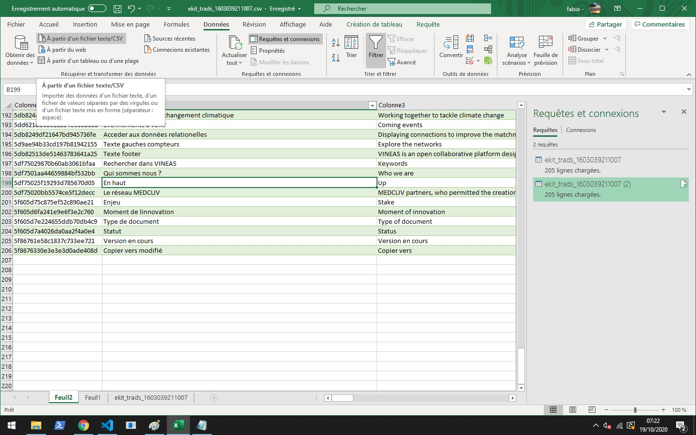

Translations
Change object version language
When you open an object, you can change the current language to update/watch it, when you switch, the validation button will update the current selected version.
Update field version language
Each multilingual field can be update line per line.
CSV advanced use
Export CSV file
Permet l'exportation de toute la base de données des traductions afin de l'éditer sous excel puis la réimporter dans le CMS
Sur la page du profil des traductions, cliquer sur Export
Un fichier va être tékéchargé en local sur votre machine
Double cliquer sur le fichier téléchargé, Microsoft Excel va s'ouvrir mais l'encodage sera invalide

Cliquer sur le menu "Données"
Choisir le type d'input: "Depuis fichier texte ou CSV" 
Sélectionner le fichier précédemment téléchargé
Vérifier le paramètre "origine du fichier" dans l'écan qui va s'ouvrir et si besoin sélectionner 65001: Unicode (UTF8) puis cliquer sur charger en bas à droite
Cliquer sur Le fichier va se charger avec un encodage correct
Mettre à jour le fichier selon les besoins
Supprimer la première colonne du fichier
Sauvegarder le fichier CTRL+s ou